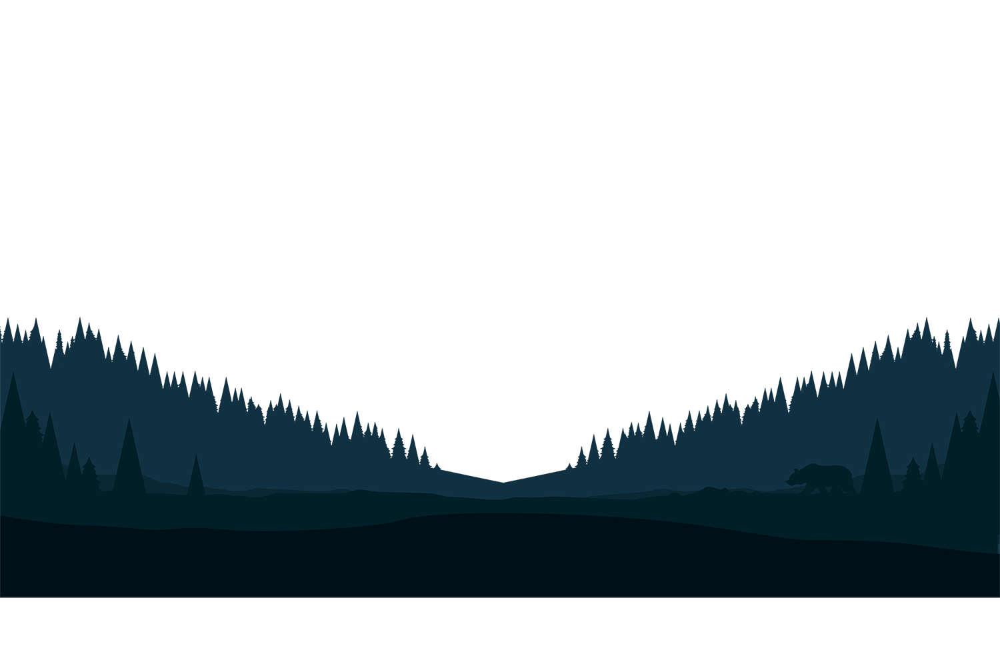
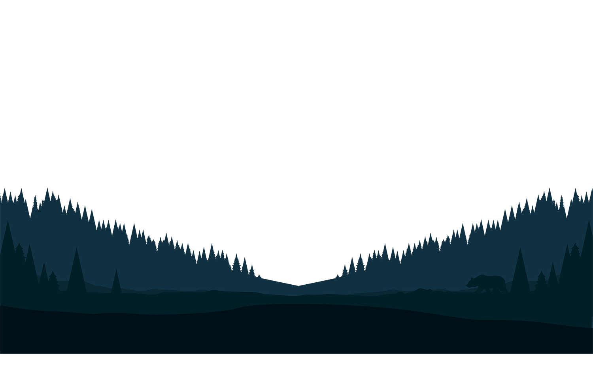

Parallax scrolling is a technique in computer graphics where background images move past the camera more slowly than foreground images, creating an illusion of depth in a 2D scene of distance. The technique grew out of the multiplane camera technique used in traditional animations.